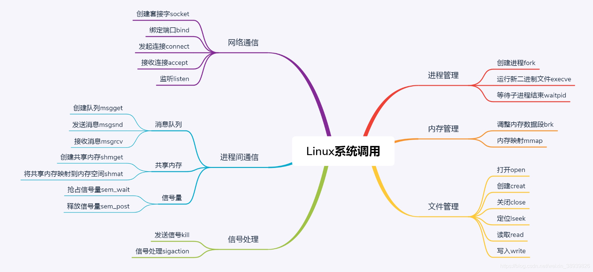
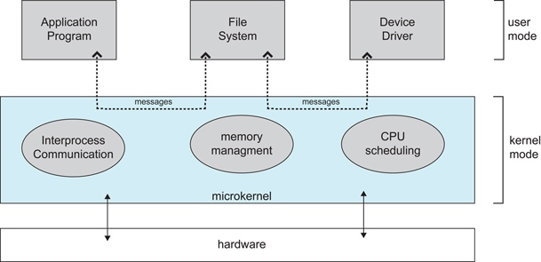

1.1 基本特征
1.并发
- 并发是指宏观上在一段时间内能同时运行多个程序，而并行则指同一时刻能运行多个指令。
- 并行需要硬件支持，如多流水线、多核处理器（CPU/GPU）或者分布式计算系统。
- 操作系统通过引入进程和线程，使得程序能够并发运行。
2.共享
- 共享是指系统中的资源可以被多个进程共同使用。
- 两种共享方式：互斥共享和同时共享。
- 互斥共享的资源称为临界资源，例如打印机等，在同一时刻只允许一个进程访问，需要用同步机制来实现互斥访问。
3.虚拟
- 虚拟技术把一个物理实体转换为多个逻辑实体。
- 主要有两种虚拟技术：时（时间）分复用技术和空（空间）分复用技术。
- 多个进程能在同一个处理器上并发执行使用了时分复用技术，让每个进程轮流占用处理器，每次只执行一小个时间片并快速切换。
- 虚拟内存使用了空分复用技术，它将物理内存抽象为地址空间，每个进程都有各自的地址空间。地址空间的页被映射到物理内存，地址空间的页并不需要全部在物理内存中，当使用到一个没有在物理内存的页时，执行页面置换算法，将该页置换到内存中。
4.异步
- 异步指进程不是一次性执行完毕，而是走走停停，以不可知的速度向前推进。
1.2 基本功能
- 进程管理：进程控制、进程同步、进程通信、死锁处理、处理机调度等。
- 内存管理：内存分配、地址映射、内存保护与共享、虚拟内存等。
- 文件管理：文件存储空间的管理、目录管理、文件读写管理和保护等。
- 设备管理：完成用户的 I/O 请求，方便用户使用各种设备，并提高设备的利用率。主要包括缓冲管理、设备分配、设备处理、虛拟设备等。
1.3 系统调用
- Linux系统调用：

-
进程管理：
- 创建进程的系统调用叫fork；
- 创建一个新的进程需要老的进程调用fork来实现，其中老的简称叫父进程，新的进程叫子进程
- 当父进程调用fork创建进程的时候，子进程将各个子系统为父进程创建的数据结构也全部拷贝了一份；如果不进行特殊处理，父进程和子进程按照相同的程序执行下去，
- 需要根据fork系统调用的返回值来判断进程是子进程还是父进程。对于fork系统调用的返回值，如果是子进程返回0，如果是父进程，返回子进程的进程号。
- 父进程通过waitpid可以确定子进程的状态，通过将子进程的进程号作为参数传递给waitpid可以得知子进程是否运行完成。
-
内存管理：
- 每个进程都有独立的进程内存空间
- 内存空间分为：存储代码的代码段和存储进程产生数据的数据段
- 对于数据段，局部变量部分执行完某函数就会释放内存，也会有动态内存分配
- 进程的内存是在需要的时候进行分配的，其中分配的并不是真实的物理内存，只有在写入数据的时候才会触发中断分配物理内存；
- 当分配的内存数量比较小的时候使用brk分配；
- 当分配的内存数量大的时候使用mmap分配一块大的内存。
-
文件管理：
- 对于已经有的文件使用open打开文件、close关闭文件；
- 对于没有的文件使用creat创建文件；
- 打开后的文件使用lseek跳到文件的某个位置；
- 对文件的内容进行读写，读的系统调用是read、写的系统调用是write；
- 切皆文件，启动进程需要的是二进制文件、加载配置是文本文件、访问的是设备文件等；
- 每个文件，Linux都会分配一个文件描述符，是一个整数，通过文件描述符可以使用系统调用；
-
信号处理
- 当程序遇到异常时需要发送一个signal给系统；
- CTRL+C是一个中断信号，正在执行的命令会退出；
- 非法访问内存和硬件故障都会报错；
- 用户可以通过kill函数，将一个用户信号发送给另一个进程；
- SIGKILL（用于终止一个进程的信号）和 SIGSTOP（用于中止一个进程的信号）
- 每种信号都定义了默认的动作，例如硬件故障，默认终止；也可以提供信号处理函数，可以通过sigaction系统调用，注册一个信号处理函数
-
进程间通讯
- msgget创建一个消息队列；
- msgsnd将消息发送给消息队列；
- 消息接收方通过msgrcv从队列中取消息；
- 如果交互信息比较多，通过共享内存的方式进行通信，shmget创建共享内存，shmat将共享内存映射到自己的内存空间
-
网络通信
- 网络插口：socket
- 网络协议：TCP/IP网络协议
-
glibc
- 为程序员提供丰富的API，封装了操作系统的系统服务，即系统调用的封装；
- Glibc 下实现的 malloc、calloc、free 等函数用来分配和释放内存，都利用了内核的 sys_brk 的系统调用。
1.4 宏内核和微内核
-
宏内核：宏内核是将操作系统功能作为一个紧密结合的整体放到内核。由于各模块共享信息，因此有很高的性能。
-
微内核：由于操作系统不断复杂，因此将一部分操作系统功能移出内核，从而降低内核的复杂性。移出的部分根据分层的原则划分成若干服务，相互独立。在微内核结构下，操作系统被划分成小的、定义良好的模块，只有微内核这一个模块运行在内核态，其余模块运行在用户态。因为需要频繁地在用户态和核心态之间进行切换，所以会有一定的性能损失。

1.5 中断分类
-
外中断：由 CPU 执行指令以外的事件引起，如 I/O 完成中断，表示设备输入/输出处理已经完成，处理器能够发送下一个输入/输出请求。此外还有时钟中断、控制台中断等。
-
异常：由 CPU 执行指令的内部事件引起，如非法操作码、地址越界、算术溢出等。
-
陷入：在用户程序中使用系统调用。
本文由 LancerStadium
创作，采用 知识共享署名4.0 国际许可协议进行许可
本站文章除注明转载/出处外，均为本站原创或翻译，转载前请务必署名
最后编辑时间为: 2023-02-17T23:56:28+08:00